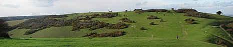
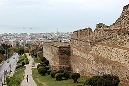

From today's featured article
Combe Hill is a causewayed enclosure, near Eastbourne in East Sussex, on the northern edge of the South Downs. It consists of an inner circuit of ditch and bank, incomplete where it meets a steep slope on its north side, and the remains of an outer circuit. Causewayed enclosures were built in England from shortly before 3700 BC until at least 3500 BC; their purpose is not known. The enclosure has been excavated twice: in 1949, by Reginald Musson; and in 1962, by Veronica Seton-Williams, who used it as a training opportunity for volunteers. Charcoal fragments from Musson's dig were later dated to between 3500 and 3300 BC. Musson also found a large quantity of Ebbsfleet ware pottery in one of the ditches. Seton-Williams found three polished stone axes deposited in another ditch, perhaps not long after it had been dug. The site is only 800 metres (870 yd) from Butts Brow, another Neolithic enclosure; both sites may have seen Neolithic activity at the same time. (Full article...)
Did you know ...
- that a number of early medieval Irish bell shrines (example pictured) were probably hidden in bogs or church walls to save them from Viking raiders?
- ... that after being benched at quarterback, Jackson State Tigers football player T. C. Taylor changed his position and became a record-setting wide receiver?
- ... that Canadian poets Milton Acorn, Margaret Atwood, and Gwendolyn MacEwen performed at the Bohemian Embassy on the same bill as burlesque dancer Libby Jones?
- ... that American teacher Marc Fogel was sentenced to 14 years in Russian prison for possessing a small amount of marijuana, but has gotten little public attention compared to Brittney Griner?
- ... that the dinosaur Bashunosaurus was first mentioned in a scientific paper in 1989, but was only formally named in 2004?
- ... that Patty Loveless's musical career rebounded after she underwent surgery to repair a blood vessel on her vocal cords?
In the news
- Supporters of former Brazilian president Jair Bolsonaro invade the National Congress (damage pictured), the Supreme Federal Court and the Palácio do Planalto.
- Michael Smith wins the PDC World Darts Championship.
- Croatia adopts the euro and joins the Schengen Area.
- Pope Emeritus Benedict XVI dies at the age of 95.
- Brazilian footballer Pelé dies at the age of 82.
On this day
- 1055 – Theodora Porphyrogenita (pictured) became the sole ruler of the Byzantine Empire after the death of her brother-in-law Constantine IX Monomachos.
- 1787 – German-born British astronomer William Herschel discovered two Uranian moons, later named Oberon and Titania by his son John.
- 1863 – American Civil War: The Battle of Arkansas Post concluded with the Union Army capturing a fort from Confederate forces near the mouth of the Arkansas River.
- 1923 – Troops from France and Belgium invaded the Ruhr to force the Weimar Republic to pay reparations in the aftermath of World War I.